Download & extract
📦 AQW_Companion.zip
Extract all…📁 AQW Companion
manifest.jsonpopup.htmlworker.jsKeep the extracted folder somewhere permanent.
Install once. Sync after farming. Track what matters.
Chrome, Edge and Opera · ZIP · No account credentials needed to install.
Manual (unpacked) build, not a browser-store installation. Download only from this project.
Keep the extracted folder somewhere permanent.
chrome://extensionsedge://extensionsopera://extensionsDeveloper mode: ONUse the address for your browser and enable Developer mode.
Choose the folder containing manifest.json. Pin AQW Companion from the Extensions menu.
Installation diagrams are simplified illustrations; the browser's exact controls may look different. No Firefox build is provided.
Open your public Character Page, then click Public Sync. No bank data; missing items are unknown.
Open your public Character Page → Sync Badges. Open Badge Hunter to see matched achievements.
Repeat after farming. Sync is a snapshot, not live game data. Review uncertain saga badges in Story.
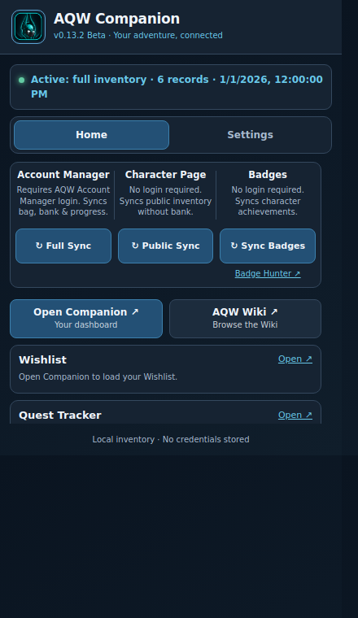
Settings → Manual export fallback → Open Inventory → Export Inventory from this tab. Open Companion and click Import & Sync. If using the injected account export, the same import button reads the staged export. You can also import a compatible JSON file under Options.
Use Settings → Troubleshooting & privacy → Enable inventory export or Test connection if required. A failed sync should not erase your previous snapshot.
See recent inventory changes, nearly finished goals, tasks and the dated calendar. Open any card to continue.
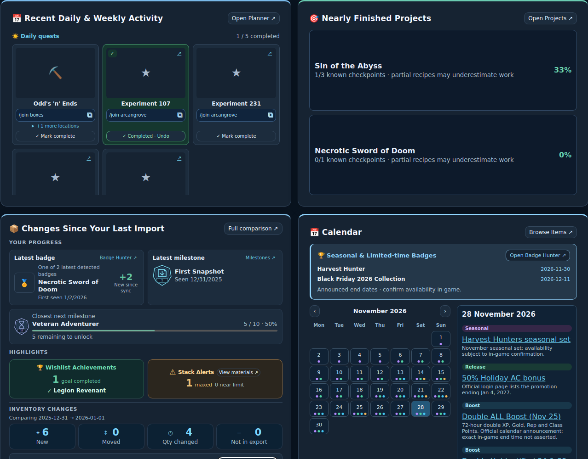
Search an item → New goal. Follow material quantities, linked recipes and How to obtain. Green means completed.
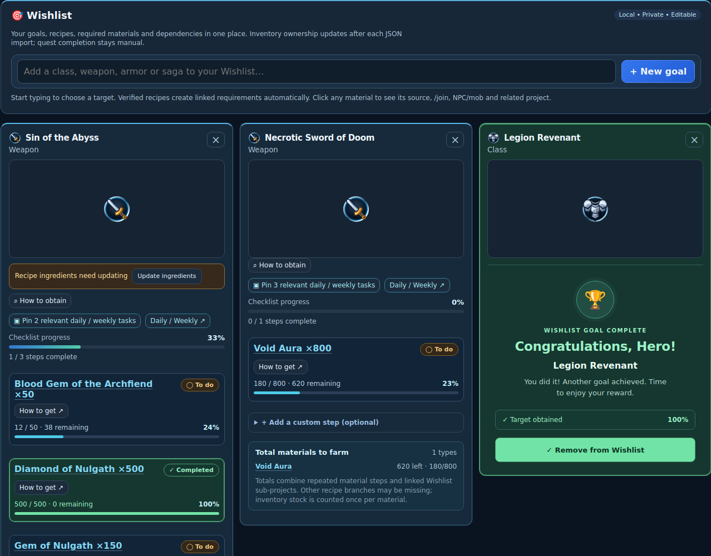
Search more quests → pin the ones you farm. Copy /join, check off completed quests and undo mistakes. Timers show resets.
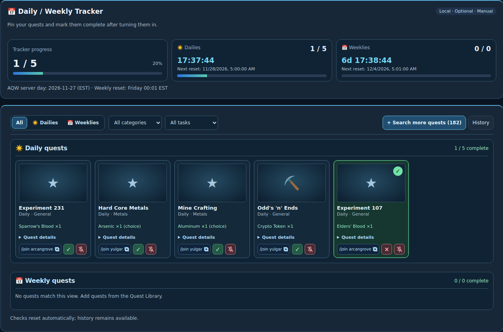
Choose a boss. Review entry requirements, team composition, class roles and mechanics. Check the in-game situation.
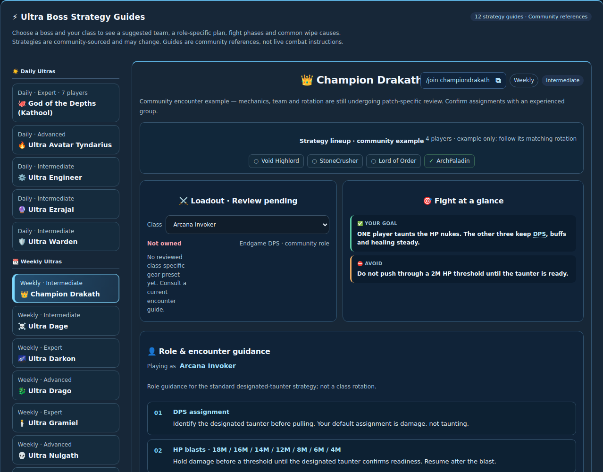
Select a class and activity for enhancement suggestions. Use Forge Tracker to record unlocked enhancements.
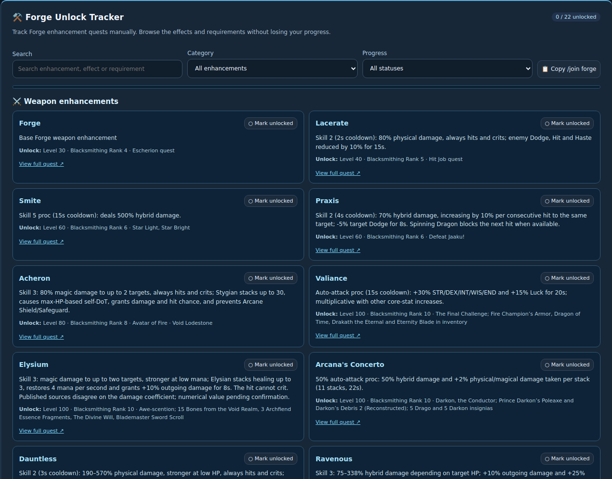
Browse sagas and chapters. Confirm manual progress or review supported badge evidence. Unknown is not locked.
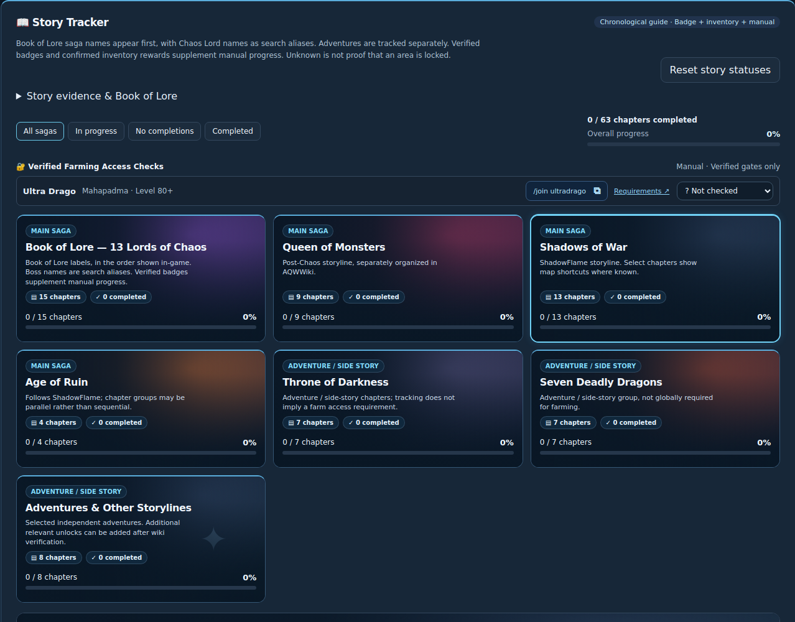
Search badges by category and ownership. Sync Character Page badges; check uncertain or ambiguous matches.
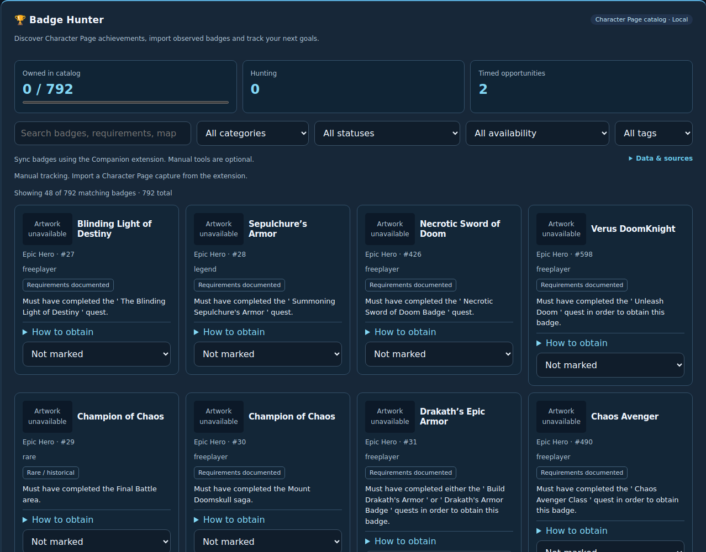
Find items and acquisition routes. Use Boost Finder to compare indexed owned gear. Verify missing or uncertain sources on the Wiki.
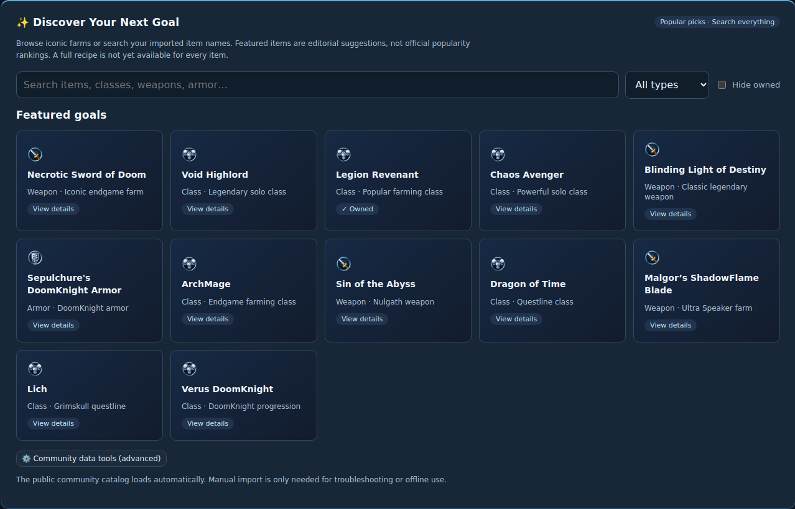
Search your saved items and stacks. Compare exports, inspect History and Alerts, or open Account Statistics and Milestones.
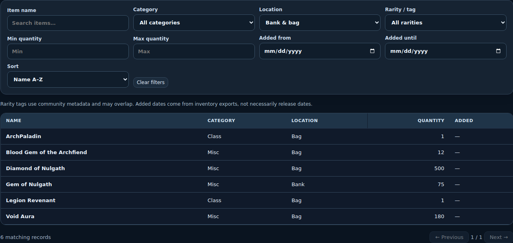
View official progress and collection insights. Green shows detected or reached milestones; uncertain badges need review. Options → Backup saves local progress.
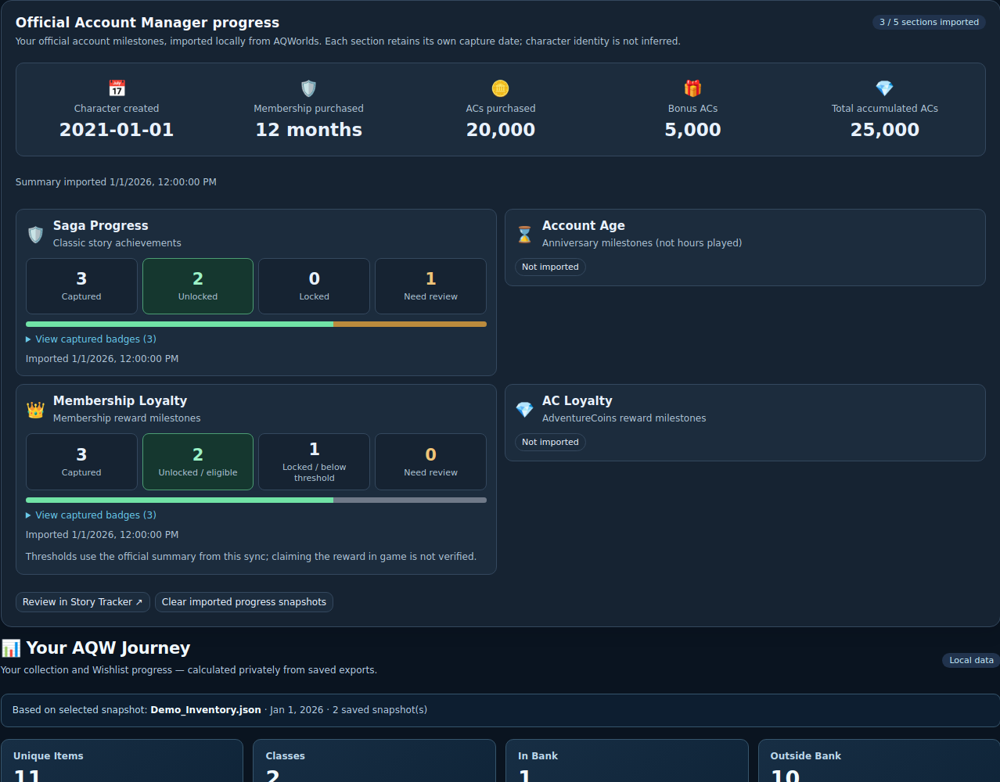
Screenshots are generated from the actual Companion interface with fictional examples, never a player's personal account. Click any screenshot to enlarge.
On supported quest pages, pin quests. Copy map commands; browse shops and locations. The Wiki remains usable without syncing.
Boost comparisons and recipe advice cover indexed data only; read the original Wiki when information is missing.
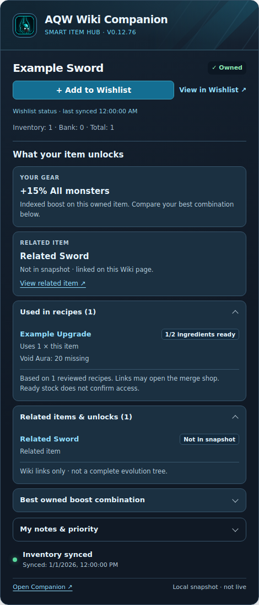
Settings → Appearance → Companion, Dark, Light, Cas B Neophyte or Stars → Apply theme.
Purchase totals & loyalty are optional and off by default. Enable only if you want them in Account Statistics. Clear previously imported progress there.
Companion → Options → Backup. Store the file somewhere safe. Do not post personal exports publicly.
Mini Wishlist and Quest Tracker live in extension Home. Open Companion to refresh them.
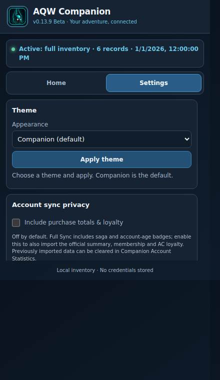
Confirm Account Manager login, grant optional access, keep Companion open and try again. Use the manual export fallback if needed. Some badge states can remain unknown.
Enable AQW Companion in Extensions. Reload it, refresh the Wiki and check site access. Disable competing Wiki themes to test if needed.
Update the snapshot after farming. Check item variants, use the original Wiki and report source issues. Never share credentials, cookies, tokens or personal exports.